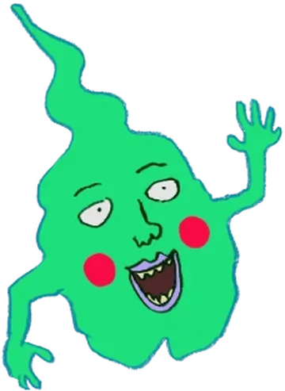
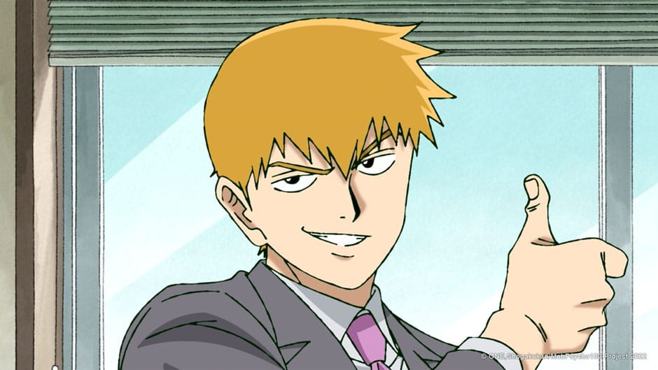
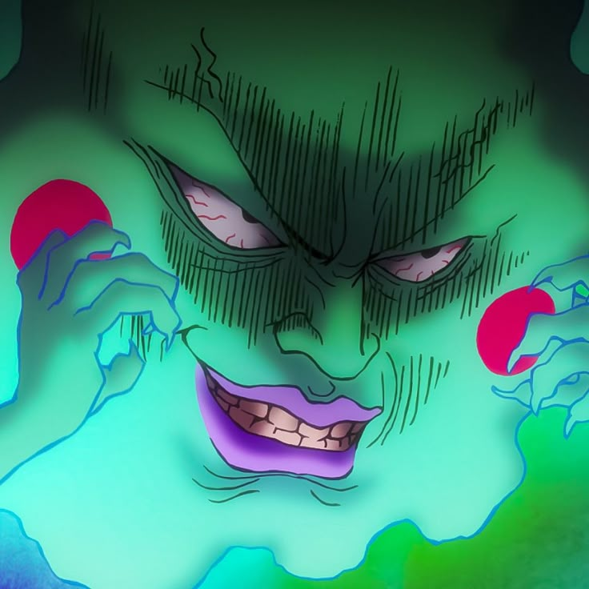
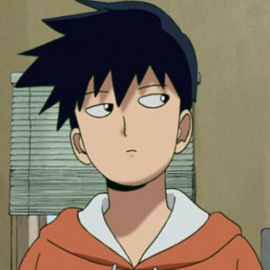

Shigeo Kageyama

Abertura do anime
Shigeo Kageyama, conhecido como Mob, é um jovem vidente extremamente poderoso que reprime suas emoções para manter suas habilidades sob controle, buscando evoluir como pessoa sem depender de seus dons psíquicos.
Sobre alguns amigos de Mob
Personagem |
Relação |
|---|---|
|
 |
A relação entre Arataka Reigen e Shigeo "Mob" Kageyama em Mob Psycho 100 é uma amizade profunda, baseada em mentor e aprendiz, onde Reigen atua como uma bússola moral e figura paterna para Shigeo. Embora Reigen seja um vigarista sem poderes que usa Mob para trabalhos, ele protege sinceramente o bem-estar emocional de Mob e o ensina a não usar seus poderes contra humanos, ajudando-o a aceitar sua humanidade acima de sua habilidade psíquica. |
 |
A relação entre Shigeo (Mob) e Covinhas evolui de uma rivalidade perigosa para uma amizade profunda. Inicialmente, Covinhas é um espírito oportunista que deseja possuir o corpo de Mob para se tornar um deus, mas, ao conviver com a pureza e os dilemas do garoto, ele acaba humanizado. Enquanto Mob aprende a lidar com seus poderes, Covinhas assume o papel de um protetor sarcástico, tornando-se o único que realmente compreende o peso da carga emocional de Shigeo. No fim, a ambição de Covinhas é substituída pela lealdade, provando que ele se tornou o melhor amigo e o aliado mais improvável do protagonista. |
 |
A relação entre Shigeo (Mob) e Ritsu é definida por um amor fraternal profundo, mas marcado por uma complexa inveja mútua. Ritsu admirava e temia os poderes do irmão, enquanto Mob invejava a inteligência e a normalidade de Ritsu. Após passarem por conflitos e pelo despertar dos poderes de Ritsu, a tensão se transforma em uma parceria sólida. Eles deixam de lado as inseguranças para se tornarem o principal suporte emocional um do outro, baseando sua união no respeito e na aceitação de que nenhum poder é mais importante do que o laço que os une. |
Poderes bases de Shigeo:
Telecinese
Exorcismo espiritual
Absorção de energia
Momento "???"
Níveis de progressão emocional:
0%: Mob está em seu estado normal, reprimindo suas emoções.
50%: A pressão começa a aumentar, geralmente sentindo irritação ou tristeza.
95%: O limite está próximo; o ambiente ao redor começa a sofrer os efeitos.
100%: A explosão total de uma emoção específica (Ex: Raiva, Gratidão ou Rejeição).
???%: O estado subconsciente onde o verdadeiro poder destrutivo é liberado.